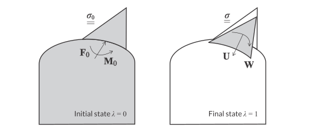
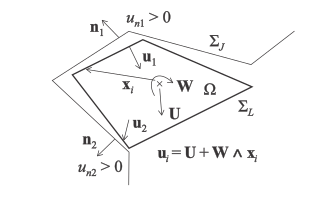
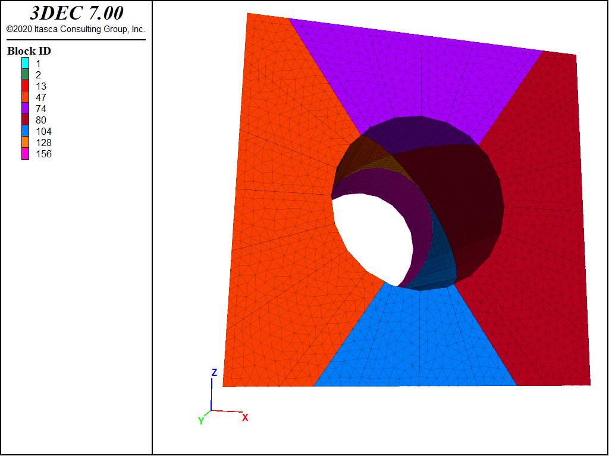
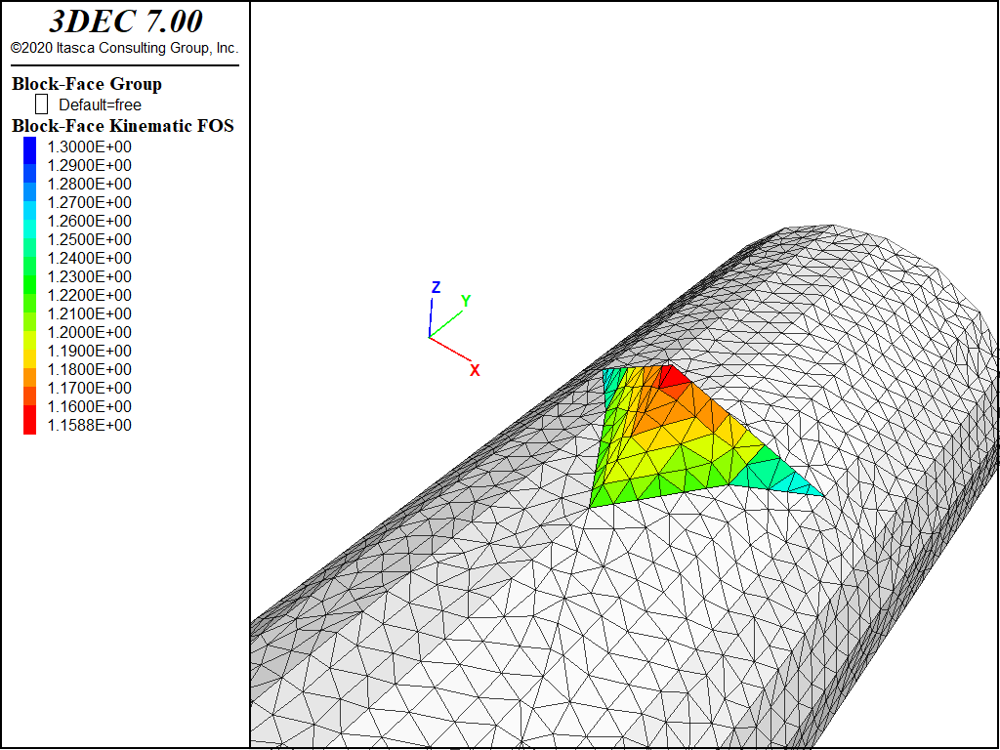
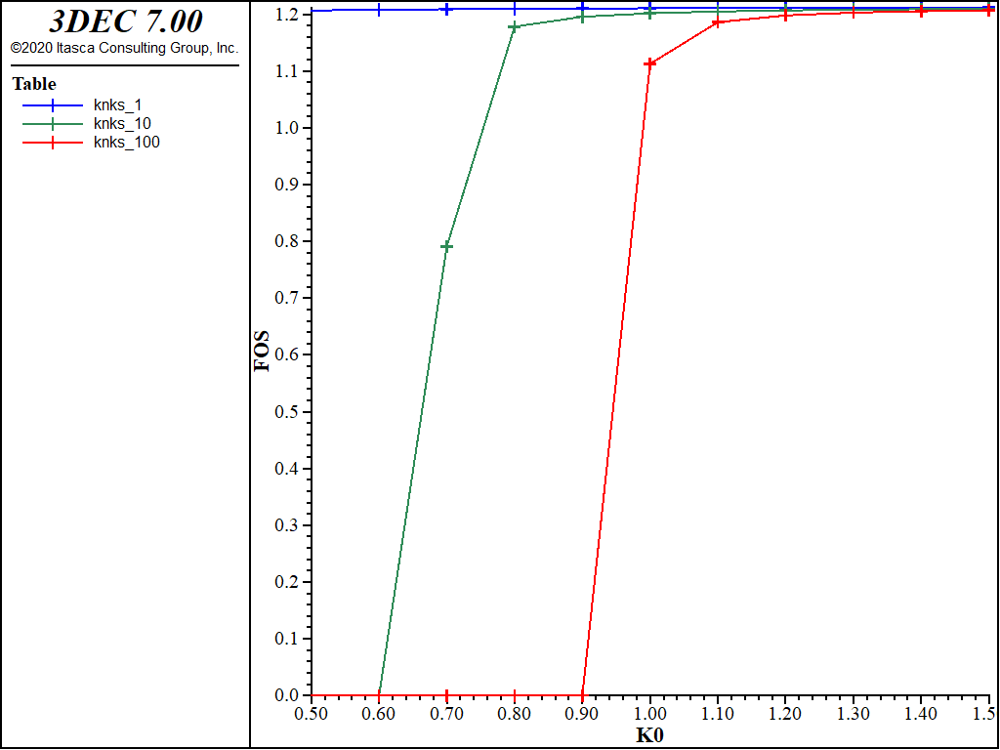
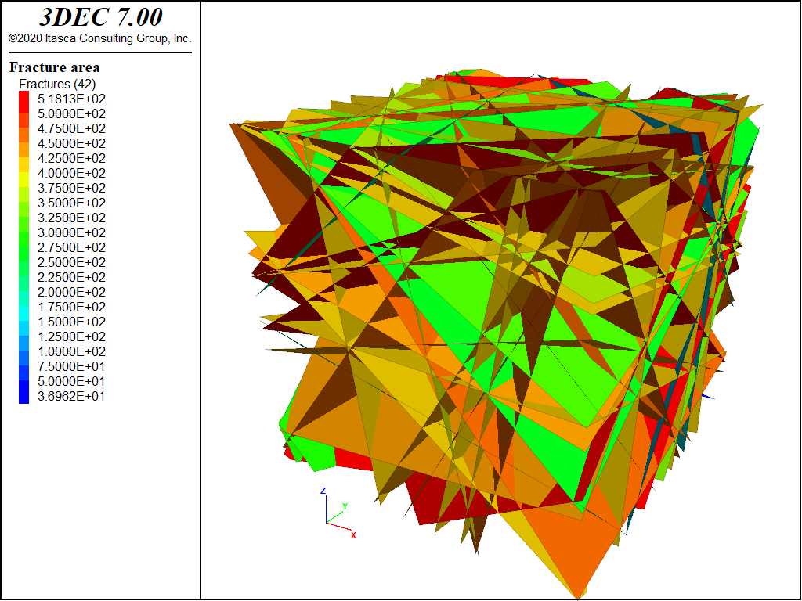
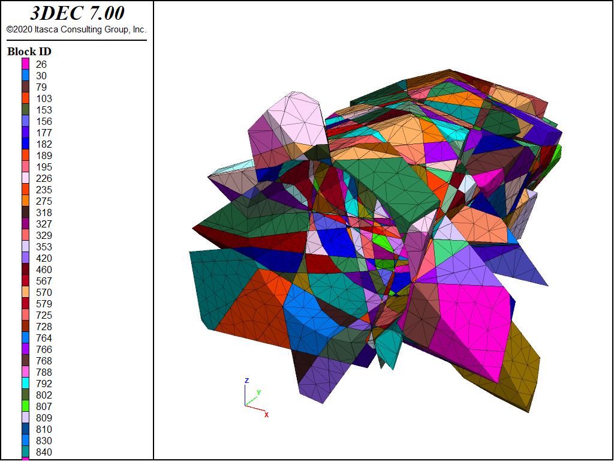

孤立块体稳定性方法
引言
孤立块体稳定性方法基于巴黎高等矿业学院开发的学术程序（Ghazal 等（2011a）、Ghazal（2013）、Ghazal 等（2011b））。其线性版本现已在 3DEC 中实现，可通过简单命令行使用。该方法评估位于地下开挖表面的任意形状单个三维刚性块体的稳定性。“孤立”表示将块体视为岩体中唯一存在的块体进行分析，即忽略其他潜在块体。块体以刚体方式平移和转动，并通过节理单元与周围连续岩体相互作用。开挖之前，块体各面初始承受原位应力。该方法计算开挖过程，即释放开挖面应力，所引起的块体运动和各面应力变化。
在刚性块体假设下，该方法理论上给出与等效 3DEC 开挖模拟相同的解，等效模拟仅在自由表面设一个块体。不过，该方法更直接，只需块体几何、节理属性和应力数据。
该方法可作为基于极限平衡和“关键块体”理论的块体稳定性方法的另一种有用选择（Goodman 和 Shi（1985）、Warburton（1985））。与这些方法的详细比较见 Ghazal 等（2011a）和 Ghazal（2013）。
该方法最初针对弹性节理，以及采用莫尔—库仑破坏准则并考虑剪胀的弹塑性节理开发。然而，目前 3DEC 中的实现仅考虑弹性节理。因此，通过计算块体各面的安全系数评估稳定性。
方法说明
分析方法
考虑位于地下开挖表面的刚性块体。开挖前初始状态下，各块体面承受初始原位应力。开挖过程就是释放未来自由面上施加的应力。这会引起其他面的应力变化，以保持块体平衡。应力变化受节理本构关系控制。此外，将块体视为刚体运动，可以把各面任意点的位移与块体中心的位移和转动联系起来。
考虑块体刚体运动和节理本构关系，在开挖前初始状态与开挖后最终状态，即自由面应力释放后，求解平衡方程，可建立一个仅以块体平移和转动为未知量的线性系统。

图 1：块体稳定性程序的概念示意图。
方程
块体平衡
对开挖前自由面上作用的合力与合力矩（\(\mathbf{F}_0\) 和 \(\mathbf{M}_0\)）施加松弛率 \(d \lambda\)，以变化量形式写出块体的力和力矩平衡。
其中
\({\mathbf{F}}_0\) 和 \({\mathbf{M}}_0\) 分别为开挖前自由块体表面 \(\Sigma_L\) 上合力和合力矩矢量的相反数；
\(\pmb{σ}\) 为节理面 \(\Sigma_J\) 上某点 \(\mathbf{x}\) 处的应力矢量，原点为位于块体内部的固定点；
\(\lambda\) 表示“卸围压”或应力松弛系数。
对于线性弹性系统，这两个方程可简化为
块体的刚体运动
在小转动假设下，可将块体任意点位移与块体中心位移和块体转动联系起来。
其中
\(\mathbf{U}\) 为块体质心或块体内部任意其他点处的位移矢量；
\(\mathbf{W}\) 为块体转动矢量；
\(\mathbf{u}\) 为块体给定点 \(\mathbf{x}\) 处的位移。

图 2：块体平移和转动的刚体运动（引自 Ghazal（2013））。
节理本构方程
其中，在节理（块体面）某给定点处，
\(u_n\) 为法向位移；
\(\sigma_n\) 为法向应力；
\(k_n\) 为法向刚度；
\({\mathbf{u}}_t\) 为剪切位移矢量；
\({\mathbf{\sigma}}_t\) 为剪应力矢量；
\(k_s\) 为剪切刚度。
注意到 \(d\pmb{σ}=d\sigma_n\mathbf{n}+d\pmb{σ}_t\)、\(du_n=\ d\mathbf{u}.\mathbf{n}\) 和 \(d{\mathbf{u}}_t=d\mathbf{u}-(d\mathbf{u}.\mathbf{n})\mathbf{n}\)，可将式 (6) 与 (7) 合并为以下方程：
其中
\(\underline{\underline{I}}\) 为单位矩阵；
\(\mathbf{n}\) 表示块体面上给定点处的外法向；
\(\mathbf{n}\ \otimes\ \mathbf{n}=\mathbf{n}\ {\mathbf{n}}^T\) 为对称张量 \(n_i\ n_j\)。
注意，符号约定中法向压应力取负，\(du_n>0\) 表示块体正在接近岩体。
在该方法最完善的版本中，节理法向采用带最大闭合量的双曲线行为；剪切方向采用具有库仑屈服准则的弹塑性行为，并在塑性阶段发生剪胀。但目前 3DEC 的实现仅考虑法向和剪切方向的线性弹性行为。未来也可能在 3DEC 中实现非线性行为。
线性系统
在开挖前初始状态与开挖后最终状态之间，求解上述方程，即式 (3)、(4)、(5)、(6) 和 (7)，可得到以下线性系统：
其中
\(\underline{\underline{A}}\ \underline{\underline{B}}\ \underline{\underline{C}}\ \underline{\underline{D}}\) 表示矩阵 \(\underline{\underline{K}}\) 在节理表面 \(\Sigma_J\) 上的积分，即广义弹性节理刚度矩阵 \(d\pmb{σ}=-\underline{\underline{K}}\ d\mathbf{u}\)：
\(\underline{\underline{r}}\) 为位置矢量 \(\mathbf{x}\) 的转动矢量表示，原点是块体内部的固定参考点；其定义使任意矢量 \(\mathbf{a}\) 均满足 \(\underline{\underline{r}}\ \mathbf{a}=\ \mathbf{a}\times\mathbf{x}\)。
若 \(\mathbf{x}=\left[x_1\ \ x_2\ \ x_3\right]^T\ \ \ \ \ ,\ \ \ \ \ \underline{\underline{r}}=\left[\begin{matrix}0&x_3&-x_2\\-x_3&0&x_1\\x_2&-x_1&0\\\end{matrix}\right]\)
通过面对面的离散化进行表面积分，块体面以表面网格形式输入。
稳定性评估
求解线性系统（式 (9)）后，可评估块体各点位移（式 (5)）和应力状态（式 (6) 与 (7)）。
随后，可按以下公式计算块体面上每个面网格的安全系数：
对于每个块体的单一安全系数，建议两种选项：采用全部块体面网格中的最小安全系数，或计算平均安全系数，写为 \(FOS_{mean}=\sum{FOS_i\ A_i/\sum A_i}, A_i\)，其中 \(i\) 为面网格面积。
应用示例
单个块体稳定性
将“孤立块体稳定性方法”应用于单个四面体块体。块体位于半径 R = 5 m 的圆柱形开挖顶板，深度为 200 m，岩体密度为 \(\rho = 2500 kg/m^3\)。该块体由三条节理与开挖顶板相交形成，是可能形成的最大体积块体；节理倾向分别为 0°、120° 和 240°，倾角均为 60°。计算安全系数时，节理强度属性设为 \(\phi\) =35° 和 \(c=0\) MPa。
该模型展示此方法的优点。由于只有块体几何和原位应力影响结果，隧道模型边界无须放在距开挖很远的位置。模型几何见图 3（Figure 3）。
使用 block analyze-stability 命令，分别针对 \(K_0\) = 1 和 \(k_n/k_s\) = 10，计算块体各面的安全系数。计算完成后，将块体列表及其最小和平均安全系数输出到屏幕。注意，本分析将已连接块体视为单个块体，并给出主块体 ID。每个块体还会在“isolated_block”槽位中赋予等于主块体 ID 的分组名称。
还要注意，已连接面在“Default”分组槽位中赋予分组名称“internal_face”。这些面不计算安全系数。
使用 Kinematic FOS 绘制块体面和等值线：在 Face 绘图项中将绘图设为“Contour”，并在“Contour”属性下拉菜单中选择“Kinematic FOS”。可利用范围，仅绘制分组名称等于最小安全系数块体主 ID 的面，本例为 128。图 4（Figure 4） 显示楔形块体各面的安全系数分布。


图 3：运动学安全系数计算采用的隧道模型。


图 4：\(K_0=1\) 和 \(k_n/k_s=10\) 情况下，楔形块体面的运动学安全系数分布。
A1.dat
model new
; 几何
block create brick -10. 10. -10 10 -10 10
fish def table_definition
; 定义半径为 5 m 的圆柱体，每隔 18 度定义一个点
local theta=0.
local i=1
local rad=5.
local delta_theta=18
loop while theta<360.
local x1=rad*math.cos(theta*math.degrad)
local y1=rad*math.sin(theta*math.degrad)
table.value('1',i)=vector(x1,y1)
i=i+1
theta=theta+delta_theta
endloop
end
[table_definition]
block group "rock_mass"
block cut tunnel table-1 '1' table-2 '1' axis 0,-10,0 0,10,0 ...
radial group "tunnel"
; 切割一个四面体块体
block cut joint-set dip 60. dip-dir 0. origin 0. 0. 7.
block cut joint-set dip 60. dip-dir 120. origin 0. 0. 7.
block cut joint-set dip 60. dip-dir 240. origin 0. 0. 7.
block zone generate edgelength 0.5
; 赋予应力，单位为 MPa
block zone cmodel assign elastic
block zone prop dens 2500e-6
model gravity 9.81
block insitu topo ratio-x 1 ratio-y 1 overburden [-190*9.81*2500e-6]
; 现在标记各面并删除隧道
block face group "free" range group-intersection "rock_mass" "tunnel"
block delete range group "tunnel"
; 现在根据给定节理参数（MPa）计算安全系数
block analyze-stability free-face 'free' ...
stiffness-normal 10000 stiffness-shear 1000 cohesion 0 friction 35
块体稳定性参数研究及与 3DEC 刚性块体的比较
采用“孤立块体稳定性方法”，对前例块体开展参数研究。针对不同 \(k_n/k_s\) 值，改变比值 \(K_0\)。使用孤立块体方法时，可反复使用同一模型，因此通过 FISH 函数改变应力并运行试验。
以楔形块体安全系数，即块体面上计算的平均安全系数，分析结果。在 block analyze-stability 中使用 block-extra 关键字，可将某块体各面安全系数平均值存入其附加变量。本例将安全系数保存到块体附加变量 1。
图 5（Figure 5） 显示结果。对于 \(k_n/k_s=1\)，块体在全部受试 \(k_0\) 值下均稳定。对于 \(k_n/k_s=10\)，当 \(k_0<0.8\) 时块体掉落。对于 \(k_n/k_s=100\)，当 \(k_0<1\) 时块体掉落。
与传统 3DEC 模型相比，使用 block stability-analyze 命令的优点是可即时得到结果，无须“求解”。传统 3DEC 模型还必须大得多，使边界远离关注区域。


图 5：采用“孤立块体稳定性”获得的各块体平均安全系数结果。注意，FOS=0 表示块体发生拉伸破坏。
02_A2run.dat
model rest 'A2_geometry'
; 现在测试不同应力比和节理刚度
fish def test
ks = 1000 ; 剪切刚度
phi = 35 ; 摩擦角
count = 0
; 测试三种不同的 kn/ks 比值
loop i (1,3)
factor = 10.0^(i-1)
kn = ks * factor ; 1, 10 , 100
tablename = 'knks_'+string(factor)
tab_ = table.create(tablename)
; 现在测试不同的初始应力
K0_list = list.seq(0.5,0.6,0.7,0.8,0.9,1,1.1,1.2,1.3,1.4,1.5)
szz = -5.0 ; MPa
szz_grad = 2500e-6*9.81 ; 密度 2500，重力加速度 9.81
loop foreach K0 K0_list
; 赋予应力并进行安全系数试验
command
block zone init stress-xx [szz*K0] gradient 0 0 [szz_grad*K0]
block zone init stress-yy [szz*K0] gradient 0 0 [szz_grad*K0]
block zone init stress-zz [szz] gradient 0 0 [szz_grad]
block analyze-stability free-face 'free' stiffness-normal [kn] ...
stiffness-shear [ks] friction [phi] block-extra 1
end_command
; 获取最小块体安全系数，假定对应于楔体
minfos = 1e12
loop foreach block block.list
if block.group(block,'isolated_block') # "None"
minfos = math.min(minfos,block.extra(block,1))
endif
endloop
; 添加到数据表
count = count + 1
table.value(tab_,count) = vector(K0,minfos)
end_loop
end_loop
end
[test]
table 'knks_1' export 'knks_1.tab'
table 'knks_10' export 'knks_10.tab'
table 'knks_100' export 'knks_100.tab'
含多个块体的隧道
本例考虑隧道周边多个块体的稳定性。通过引入具有以下属性的 DFN（图 6（Figure 6））生成块体：方位均匀分布，尺寸均匀并设为 50 m，密度为 2。
隧道尺寸、节理属性和隧道深度与前述示例相同。由于“孤立块体稳定性方法”仅研究与隧道接触的块体，模型范围限制为边长 20 m 的立方体。
运行 block analyze-stability 命令后，与隧道接触的块体会在“isolated_blocks”槽位中赋予分组名称。名称等于块体 ID，已连接时则等于主 ID。因此，隐藏“isolated_block”分组等于“none”的块体，即可绘制接触隧道的块体（图 7（Figure 7））。
每个块体的平均安全系数都会输出到图形界面，也可按前述第二个示例指定 block-extra 进行保存。图 （Figure）Figure #isoblock3-fos 显示平均安全系数小于 1 的不稳定块体。


图 6：用于创建块体模型的离散裂隙网络。


图 7：识别出的自由块体，保存在“isolated_block”分组槽位中。

A3.dat
model new
; 几何
block tolerance 1e-3
block create brick -10. 10. -10 10 -10 10
model domain extent -10. 10.
model random 10000
; 定义 DFN 模板
fracture template create 'fractures' orientation uniform ...
size uniform size-limits 50 50
fracture generate dfn 'fractures' template 'fractures' mass-density 2
fish def table_definition
; 定义半径为 5 m 的圆柱体，每隔 18 度定义一个点
local theta=0.
local i=1
local rad=5.
local delta_theta=18
loop while theta<360.
local x1=rad*math.cos(theta*math.degrad)
local y1=rad*math.sin(theta*math.degrad)
table.value('1',i)=vector(x1,y1)
i=i+1
theta=theta+delta_theta
endloop
end
[table_definition]
block group "rock_mass"
block cut tunnel table-1 '1' table-2 '1' axis 0. -10. 0. 0. 10. 0. ...
radial group "tunnel"
; 切割节理
block cut dfn name 'fractures'
block zone generate edgelength 1.0
; 赋予应力，单位为 MPa，采用 K0 = 0.5
block zone cmodel assign elastic
block zone prop dens 2500e-6
model gravity 9.81
block insitu topo ratio-x 0.5 ratio-y 0.5 overburden [-190*9.81*2500e-6]
; 现在删除隧道
block face group "free" range group-intersection "rock_mass" "tunnel"
block delete range group "tunnel"
model save 'A3_mesh'
block analyze-stability free-face 'free' stiffness-normal 10000 ...
stiffness-shear 1000 ...
friction 35 block-extra 1
block hide on range group 'isolated_block=none'
model save 'A3_K0_0.5'
参考文献
Ghazal, R., F. Hadj-Hassen, and M. Tijani.（2011）《考虑原位应力的地下开挖周边孤立块体研究新数值方法》，载于第 45 届美国岩石力学／岩土力学研讨会论文集（美国加利福尼亚州旧金山，2011 年 6 月）。弗吉尼亚州亚历山德里亚：ARMA。
Ghazal, R.（2013）《考虑初始应力和节理非线性行为的地下开挖壁面岩石块体稳定性建模》。博士学位论文，巴黎高等矿业学院。
Ghazal, R., F. Hadj-Hassen, and M. Tijani.（2011）《考虑原位应力的地下开挖表面孤立岩块稳定性建模》。载于第 12 届国际岩石力学学会大会论文集（2011 年 10 月，中国北京），Zhou Y 主编，《岩石工程与环境的协调》。
Goodman, R. E., G. H. Shi.（1985）《块体理论及其在岩石工程中的应用》。新泽西州恩格尔伍德克利夫斯：Prentice-Hall。
Warburton, PM.（1985）《用于重建块状岩体几何并分析单块体稳定性的计算机程序》。Computers & Geosciences，11(6)，707–712。
| 这些内容对您有帮助吗？… | FLAC3D © 2019, Itasca | 原文更新于 2020 年 10 月 8 日 |
| 版权与免责声明 | ||